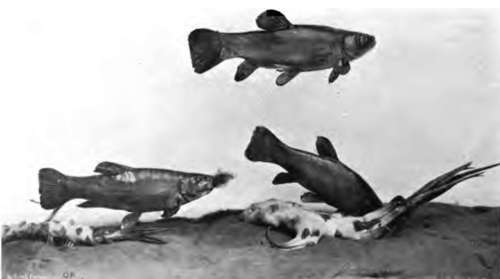

The Carp Family (Cyprinias). Part 3
Description
This section is from the book "Fishing", by Horace G. Hutchinson. Also available from Amazon: Fishing.
The Carp Family (Cyprinias). Part 3
The Barbel (Barbus vulgaris), an inhabitant of the rivers of Central Europe, is very locally distributed in England (Thames, Lea, Trent, Yorkshire, Wales), and absent from Scotland and Ireland. Specimens weighing i o to 15 lbs. occasionally occur in this country, whilst from the Continent 40 to 50 lb. barbels are on record. The flesh is not held in high esteem with us, and is even poisonous to some people, probably after the fish has been feeding on decomposing animal substances, every sort of food commensurate with its small weak jaws being resorted to by the barbel.
The genus Barbus is a very large one, upwards of 250 species, from Europe, Asia, and Africa, being distinguished by ichthyologists. Among the exotic species which are of importance from the sporting point of view, mention should be made of the mahseer or mahaseer of India, which is dealt with in another chapter.
The Rudd (Leuciscus erythrophthalmus) and the Roach (Leuciscus rutilus) are very similar in general appearance, and frequently confounded by anglers. The above definition (see synopsis), and the sketch of the rudd given on p. 124, should suffice for the correct determination of any specimen, but should any doubt remain, an examination of the lower pharyngeal bones will settle the point, the teeth being disposed in two series on each bone in the former species, in a single series in the latter. The rudd is distributed over nearly the whole of Europe, with the exception of the Spanish Peninsula, and Asia Minor and Western Siberia. Although somewhat local with us it is found not only in England and Scotland but also in Ireland, whence the roach is absent. The roach is also distributed over the greater part of Europe, north of the Pyrenees and Alps, it being absent from Italy, where the rudd alone is found. It is absent from Cornwall and Wales, as well as from Ireland. Both species are gregarious, and prefer clear and deep but still rivers and quiet waters; the largest individuals weigh from 2 to 3 lbs. As in the other kinds of Leuciscus animal food preponderates over vegetable.
The Chub (Leuciscus cephalus) is one of the largest of our Cyprinids, attaining a length of two feet and a weight of 5 to 7 lbs. It is fond of insects and takes the fly readily, but its flesh, unfortunately, is tasteless and full of bones, and rapidly decomposes. It does not avoid running waters like most of our larger Cyprinids, and has a very wide distribution, being found over nearly the whole of Europe, from north to south, and extending into Asia Minor. It is found over the greater part of England, though local and absent from many rivers, and in the south of Scotland; it is absent from Cornwall, Wales, and Ireland.
The Dace (Leuciscus Dobuld)
This fish, which rarely attains a foot in length and a weight of 1 lb., is common in most of our clear streams, avoiding perfectly stagnant water, sometimes descending to brackish tidal waters, and is found over nearly the whole of Europe, north of the Alps and Pyrenees, and extends into Western Siberia; but it does not occur either in Scotland or in Ireland. The graining (L. lancastriensis) is a mere variety of the dace.
The Tench (Tinea vulgaris), though so different in general form, colouration, and habits, from the Leuciscus, is structurally very closely related to them, differing principally in the very small scales embedded in a slimy skin, and in the presence of a minute barbel on each side of the mouth. Large specimens weigh 4 or 5 lbs. It is one of the best-known fishes, although no longer held in such esteem as in the days of mediaeval abbeys, when the provident Cistercian monks attached great importance to pond culture, and gave the first place to the tench and bream, the carp still being unknown in the greater part of Europe. The tench is really an excellent fish if kept in cool, clear water for a few days, as it is the custom to do in Germany, in order to rid it of its muddy flavour, its favourite abode being streams and ponds with muddy bottoms with much vegetation. It generally lives in small companies, and moves about less than other pond fishes, feeding mainly on worms and molluscs; it does very well in company with the carp. The range of this fish is a very wide one, extending all over Europe, with the exception of the Spanish Peninsula, and a considerable part of Western Asia. It is locally found in England, Scotland, and Ireland, mostly in ponds, and is believed to have been introduced by the monks; a view which, however, is not supported by any evidence, and is practically disposed of by the fact that fossil remains of the tench are found in the Pleistocene deposits of Great Britain.1 Like the carp and ide (Leuciscus idus) the tench produces a golden variety, a very beautiful fish.
32.- White Bream.
33.- Tench Feeding.
The Common Bream (Abramis bramd) and the White Bream or Bream Flat (A. bliccd) are often confounded by anglers, and the view sometimes has been expressed that the latter is only the young of the former, a view founded upon the fact that common bream under five inches long have the silvery colouration of the white bream, whilst large specimens more resemble carp in their bronzy yellow colour. But the second species differs, at whatever age, in having a shorter base to the anal fin and larger scales on the body, characters which find their expression in the numbers given in the above synopsis. Should doubts persist, an appeal can be made to the pharyngeal dentition, which is in two rows on each side in the white bream and in a single row in the common bream. In his work on "British Fishes'* (p. 195) Day remarks, in describing the latter species, Pharyngeal teeth usually in one row, but in rare exceptions a second row, formed by means of a single additional tooth." This apparent exception may be due to the presence of a replacement tooth, at the side of the normal series, the teeth being replaced at intervals; such conditions of the pharyngeal teeth have sometimes deceived observers as to the number of teeth on each bone. Whatever the distinction in the pharyngeal dentition be worth, the external characters are quite sufficient for the discrimination of the two species, and I have not found any difficulty in identifying the numerous examples of both kinds which have hitherto passed through my hands. The common bream reaches a length of two feet and a weight of 12 lbs., whilst the largest white bream examined by me measures only 12½ inches.
1 Cf. E. T. Newton, Geol. Mag., viii., 1901, p. 49.
Both species of bream inhabit Northern and Central Europe, and are locally distributed over England, Scotland, and Ireland. The larger species is the more common, and occurs in slow-running rivers, canals, ponds, and reservoirs; in some places, as in the Norfolk broads, both species are found together, whilst in others they keep apart from each other. As observed by Day, the white bream is more commonly found with the rudd and roach than the common bream.
Bream are usually despised for the table in this country, but fish from large lakes, if well prepared, are by no means deserving of ostracism. The poorer Jews in our large cities make an abundant consumption of bream and other Cyprinids, and these fishes find a ready sale, at prices varying between 3d. and iod. per lb., on the Jewish fish market in the east end of London. Carp and tench are valued highest, next comes the bream, and last the chub, roach, and dace. A considerable proportion of the fish there sold are imported alive from Holland, and kept in tubs until disposed of.
Continue to: